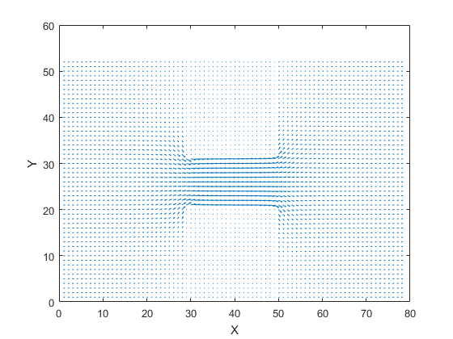

Assignment-2 Finite Difference Method
Steven Cramp 101030294
Contents
Introduction
The purpouse of this lab is to analyse the current and voltage through a semiconductor using the finite diffrence method. This lab will look at the effect that diffrences between finite diffrence method and the analitical soulitions for the voltage in the semiconductor. It will also look at the effects that mesh size, obstacle size and conductivity of the obsticals has on the current through the semiconductor.
Part 1 A
This section looks at the solution for the case where a voltage is applied to one side of the semiconductor, while the other side is grounded, and the top and bottom are left free. The figure below shows the voltage at each point in the mesh relitive to ground for the test case. It can be seen that the voltage fallows a line with a negitive slope. This is because the top and bottom are not held at a value and are allowed to converge to a voltage. The voltage that they converge to is the diffrence between the voltages divided by the length of the semiconducter times the distance along the semiconductor plus the applied voltage. This comes from Gauss's law.
clear clc close all dx =1; dy=1; nx = 78; ny = 52; V = zeros(ny,nx); G = sparse(nx*ny,nx*ny); V0=1; BC= [1, nan, 0,nan]; B = zeros(1,nx*ny); for p = 1:size(B,2) if (p== 1) if isnan(BC(1)) else B(p)=BC(1); end elseif (p == nx) if isnan(BC(3)) else B(p)=BC(3); end elseif (p == (1+(ny-1)*nx)) if isnan(BC(1)) else B(p)=BC(1); end elseif(p == nx*ny) if isnan(BC(3)) else B(p)=BC(3); end elseif(mod(p,nx)==0) if isnan(BC(3)) else B(p)=BC(3); end elseif(mod(p-1,nx)==0) if isnan(BC(1)) else B(p) = BC(1); end elseif(1<p&p<nx) if isnan(BC(4)) else B(p) =BC(4); end elseif((1+(ny-1)*nx)<p&p<nx*ny) if isnan(BC(2)) else B(p) =BC(2); end else end end for p = 1:ny for m = 1:nx n = m+(p-1)*nx; nxm = (m-1)+(p-1)*nx; nxp = (m+1)+(p-1)*nx; nym = (m)+(p-2)*nx; nyp = m+(p)*nx; nxm2 = (m-2)+(p-1)*nx; nxp2=(m+2)+(p-1)*nx; nym2 = (m)+(p-3)*nx; nyp2 = m+(p+1)*nx; nxp3 = (m+3)+(p-1)*nx; nxm3 = (m-3)+(p-1)*nx; if (n == 1) if (isnan(BC(1))) G(n,n)=-3/(2*dy)+2/(dx^3); G(n,nyp) =4/(2*dy); G(n,nyp2) =1/(2*dy); G(n,nxp)=-5/(dx^3); G(n,nxp2) =4/(dx^3); G(n,nxp3) =-1/(dx^3); else G(n,n)=1; end elseif (n == nx) if (isnan(BC(3))) G(n,n)=3/(2*dx)+2/(dx^3); G(n,nym) =-4/(2*dx); G(n,nym2) =1/(2*dx); G(n,nxm)=-5/(dx^3); G(n,nxm2) =4/(dx^3); G(n,nxm3) =-1/(dx^3); else G(n,n)=1; end elseif(n == (1+(ny-1)*nx)) if (isnan(BC(1))) G(n,n)=3/(2*dy)+2/(dx^3); G(n,nyp) =-4/(2*dy); G(n,nyp2) =1/(2*dy); G(n,nxp)=-5/(dx^3); G(n,nxp2) =4/(dx^3); G(n,nxp3) =-1/(dx^3); else G(n,n)=1; end elseif(n == nx*ny) if (isnan(BC(3))) G(n,n)=3/(2*dy)+2/(dx^3); G(n,nyp) =-4/(2*dy); G(n,nyp2) =1/(2*dy); G(n,nxm)=-5/(dx^3); G(n,nxm2) =4/(dx^3); G(n,nxm3) =-1/(dx^3); else G(n,n)=1; end elseif(mod(n,nx)==0) if (isnan(BC(3))) G(n,n)=2/(dx^3); G(n,nym) =1/(2*dy); G(n,nyp) =1/(2*dy); G(n,nxm)=-5/(dx^3); G(n,nxm2) =4/(dx^3); G(n,nxm3) =-1/(dx^3); else G(n,n)=1; end elseif(mod(n-1,nx)==0) if (isnan(BC(1))) G(n,n)=2/(dx^3); G(n,nym) =1/(2*dy); G(n,nyp) =1/(2*dy); G(n,nxp)=-5/(dx^3); G(n,nxp2) =4/(dx^3); G(n,nxp3) =-1/(dx^3); else G(n,n)=1; end elseif (1<n&n<nx) if (isnan(BC(4))) G(n,n)=-3/(2*dy)-2/(dx^2); G(n,nyp) =4/(2*dy); G(n,nyp2) =-1/(2*dy); G(n,nxp) = 1/(dx^2); G(n,nxm) = 1/(dx^2); else G(n,n)=1; end elseif ((1+(ny-1)*nx)<n&n<nx*ny) if (isnan(BC(2))) G(n,n)=3/(2*dy)-2/(dx^2); G(n,nym)=-4/(2*dy); G(n,nym2) =1/(2*dy); G(n,nxp) = 1/(dx^2); G(n,nxm) = 1/(dx^2); else G(n,n)=1; end else G(n,n)=-4/(dx^2); G(n,nxp) = 1/(dx^2); G(n,nxm) = 1/(dx^2); G(n,nym) = 1/(dx^2); G(n,nyp) = 1/(dx^2); end end end %figure('name', 'Matrix') %spy(G) V= G\B'; for p = 1:ny for m = 1:nx n = m+(p-1)*nx; Vout(p,m) =V(n); end end figure surf(Vout) xlim([1 80]) xlabel('X') ylabel('Y') zlabel('V') view(0, 0)
Part 1B
This section looks at the diffrence between the numarical and analytical solution for the case where a voltage is applied across the sides of the semiconductor and the top and bottom are held at zero. The plot below shows the result for the numarical solution for the problem it can be seen from this that the boundry conditions are clearly difined. This is because the boundry voltages are well difined by the boundry conditions. The code sagment below was used to generate the surface seen if the figure below.
clear dx =1; dy=1; nx = 78; ny = 52; V = zeros(ny,nx); G = sparse(nx*ny,nx*ny); V0=1; BC= [1, 0, 1,0]; B = zeros(1,nx*ny); for p = 1:size(B,2) if (p== 1) if isnan(BC(1)) else B(p)=BC(1); end elseif (p == nx) if isnan(BC(3)) else B(p)=BC(3); end elseif (p == (1+(ny-1)*nx)) if isnan(BC(1)) else B(p)=BC(1); end elseif(p == nx*ny) if isnan(BC(3)) else B(p)=BC(3); end elseif(mod(p,nx)==0) if isnan(BC(3)) else B(p)=BC(3); end elseif(mod(p-1,nx)==0) if isnan(BC(1)) else B(p) = BC(1); end elseif(1<p&p<nx) if isnan(BC(4)) else B(p) =BC(4); end elseif((1+(ny-1)*nx)<p&p<nx*ny) if isnan(BC(2)) else B(p) =BC(2); end else end end for p = 1:ny for m = 1:nx n = m+(p-1)*nx; nxm = (m-1)+(p-1)*nx; nxp = (m+1)+(p-1)*nx; nym = (m)+(p-2)*nx; nyp = m+(p)*nx; nxm2 = (m-2)+(p-1)*nx; nxp2=(m+2)+(p-1)*nx; nym2 = (m)+(p-3)*nx; nyp2 = m+(p+1)*nx; nxp3 = (m+3)+(p-1)*nx; nxm3 = (m-3)+(p-1)*nx; if (n == 1) if (isnan(BC(1))) G(n,n)=-3/(2*dy)+2/(dx^3); G(n,nyp) =4/(2*dy); G(n,nyp2) =1/(2*dy); G(n,nxp)=-5/(dx^3); G(n,nxp2) =4/(dx^3); G(n,nxp3) =-1/(dx^3); else G(n,n)=1; end elseif (n == nx) if (isnan(BC(3))) G(n,n)=3/(2*dx)+2/(dx^3); G(n,nym) =-4/(2*dx); G(n,nym2) =1/(2*dx); G(n,nxm)=-5/(dx^3); G(n,nxm2) =4/(dx^3); G(n,nxm3) =-1/(dx^3); else G(n,n)=1; end elseif(n == (1+(ny-1)*nx)) if (isnan(BC(1))) G(n,n)=3/(2*dy)+2/(dx^3); G(n,nyp) =-4/(2*dy); G(n,nyp2) =1/(2*dy); G(n,nxp)=-5/(dx^3); G(n,nxp2) =4/(dx^3); G(n,nxp3) =-1/(dx^3); else G(n,n)=1; end elseif(n == nx*ny) if (isnan(BC(3))) G(n,n)=3/(2*dy)+2/(dx^3); G(n,nyp) =-4/(2*dy); G(n,nyp2) =1/(2*dy); G(n,nxm)=-5/(dx^3); G(n,nxm2) =4/(dx^3); G(n,nxm3) =-1/(dx^3); else G(n,n)=1; end elseif(mod(n,nx)==0) if (isnan(BC(3))) G(n,n)=2/(dx^3); G(n,nym) =1/(2*dy); G(n,nyp) =1/(2*dy); G(n,nxm)=-5/(dx^3); G(n,nxm2) =4/(dx^3); G(n,nxm3) =-1/(dx^3); else G(n,n)=1; end elseif(mod(n-1,nx)==0) if (isnan(BC(1))) G(n,n)=2/(dx^3); G(n,nym) =1/(2*dy); G(n,nyp) =1/(2*dy); G(n,nxp)=-5/(dx^3); G(n,nxp2) =4/(dx^3); G(n,nxp3) =-1/(dx^3); else G(n,n)=1; end elseif (1<n&n<nx) if (isnan(BC(4))) G(n,n)=-3/(2*dy)-2/(dx^2); G(n,nyp) =4/(2*dy); G(n,nyp2) =-1/(2*dy); G(n,nxp) = 1/(dx^2); G(n,nxm) = 1/(dx^2); else G(n,n)=1; end elseif ((1+(ny-1)*nx)<n&n<nx*ny) if (isnan(BC(2))) G(n,n)=3/(2*dy)-2/(dx^2); G(n,nym)=-4/(2*dy); G(n,nym2) =1/(2*dy); G(n,nxp) = 1/(dx^2); G(n,nxm) = 1/(dx^2); else G(n,n)=1; end else G(n,n)=-4/(dx^2); G(n,nxp) = 1/(dx^2); G(n,nxm) = 1/(dx^2); G(n,nym) = 1/(dx^2); G(n,nyp) = 1/(dx^2); end end end %figure('name', 'Matrix') %spy(G) V= G\B'; for p = 1:ny for m = 1:nx n = m+(p-1)*nx; Vout(p,m) =V(n); end end figure surf(Vout) xlabel('X') ylabel('Y') zlabel('V') x = 0:1:nx-1; y = 0:1:(ny-1); [X,Y]= meshgrid(x,y); V2 = zeros (size(X));
The plot below was generated using the fallowing code. It can bee seen from the plot that the value of the voltage at the side of the semiconductor does not converge to a sigular value. Instead it ocilates about the applied voltage. This is due to the finite approxamation of used to generate the solution. Incrasing the number of approxamations will result in the boudries being more well difined.
for u = 1:2:160 A= ((cosh(u*pi.*(X-(nx-1)/2)./(ny-1)))./((cosh(u*pi*((nx-1)/2)/(ny-1))))); C=sin((u*pi.*Y)./(ny-1)); V2 = V2+ (1/u)*A.*C; end V2 =V2*(4*1/pi); figure surf(X,Y,V2) xlabel('X') ylabel('Y') zlabel('V')
The plot below shows the diffrence between the numarical and analytical solutions for the problem. From this figure it can be seen that the largest diffrence appeirs at the corners of the semiconductors. This is because the coners of the semiconductor require more approximations to generate the correct answer.
diff =V2-Vout; figure surf(diff) xlabel('X') ylabel('Y') zlabel('V')
Part 2A
Using the fallowing code this section looks a the analysis of the current through a semiconductor composed of a conductive regiond with two nonconductive blocks placed at the center of the semiconductor. To analyse the current through the semiconductor a potential of one was applied across the material.
sig = 1; sigbox = 10e-2; box1pos= [29,20]; box2pos= [29,ny]; box1dim= [20,20]; box2dim= [20,20]; dx2 =1; dy2=1; nx2 = 78; ny2 = 52; V3 = zeros(ny,nx); G2= sparse(nx*ny,nx*ny); V02=1; BC2= [1, nan, 0,nan]; B2 = zeros(1,nx*ny); cond = zeros (ny,nx); % sets up conduction map for p = 1:ny2 for m = 1:nx2 if ((m >=box1pos(1)&m <=box1pos(1)+box1dim(1))&p <=box1pos(2)&p >=box1pos(2)-box1dim(2))|((m >=box2pos(1)&m <=box2pos(1)+box2dim(1))&p <=box2pos(2)&p >=box2pos(2)-box2dim(2)) cond(p,m) =sigbox; else cond(p,m) =sig; end end end for p = 1:size(B2,2) if (p== 1) if isnan(BC2(1)) else B2(p)=BC2(1); end elseif (p == nx) if isnan(BC2(3)) else B2(p)=BC2(3); end elseif (p == (1+(ny-1)*nx)) if isnan(BC2(1)) else B2(p)=BC2(1); end elseif(p == nx*ny) if isnan(BC2(3)) else B2(p)=BC2(3); end elseif(mod(p,nx)==0) if isnan(BC2(3)) else B2(p)=BC2(3); end elseif(mod(p-1,nx)==0) if isnan(BC2(1)) else B2(p) = BC2(1); end elseif(1<p&p<nx) if isnan(BC2(4)) else B2(p) =BC2(4); end elseif((1+(ny-1)*nx)<p&p<nx*ny) if isnan(BC2(2)) else B2(p) =BC2(2); end else end end for p = 1:ny2 for m = 1:nx2 n = m+(p-1)*nx2; nxm = (m-1)+(p-1)*nx2; nxp = (m+1)+(p-1)*nx2; nym = (m)+(p-2)*nx2; nyp = m+(p)*nx2; nxm2 = (m-2)+(p-1)*nx2; nxp2=(m+2)+(p-1)*nx2; nym2 = (m)+(p-3)*nx2; nyp2 = m+(p+1)*nx2; nxp3 = (m+3)+(p-1)*nx2; nxm3 = (m-3)+(p-1)*nx2; if m == 1 G2(n,:)=0; G2(n,n)=1; elseif m==nx2 G2(n,:)=0; G2(n,n)=1; elseif p ==1 ryp = (cond(p,m)+cond(p+1,m))/2; rxp = (cond(p,m)+cond(p,m+1))/2; rxm = (cond(p,m)+cond(p,m-1))/2; G2(n,n) = -(ryp+rxp+rxm); G2(n,nyp)= ryp; G2(n,nxm)= rxm; G2(n,nxp) = rxp; elseif p==ny2 rym = (cond(p,m)+cond(p-1,m))/2; rxp = (cond(p,m)+cond(p,m+1))/2; rxm = (cond(p,m)+cond(p,m-1))/2; G2(n,n) = -(rym+rxp+rxm); G2(n,nym)= rym; G2(n,nxm)= rxm; G2(n,nxp) = rxp; else ryp = (cond(p,m)+cond(p+1,m))/2; rym = (cond(p,m)+cond(p-1,m))/2; rxp = (cond(p,m)+cond(p,m+1))/2; rxm = (cond(p,m)+cond(p,m-1))/2; G2(n,n) = -(ryp+rym+rxp+rxm); G2(n,nyp)= ryp; G2(n,nym)= rym; G2(n,nxm)= rxm; G2(n,nxp) = rxp; end end end %figure('name', 'Matrix') %spy(G2) V3 = G2\B2'; Vout2 = zeros(ny, nx); for p = 1:ny for m = 1:nx n = m+(p-1)*nx; Vout2(p,m) =V3(n); end end
The plot below shows the conductivity map for the semiconductor. The regionds of the map that are blue represent the regions that are inside the low conductivity boxes.
figure surf(cond) title('Sigma') xlabel('X') ylabel('Y') zlabel('conductance')
The fallowing plot shows the voltage at each point of the mesh. From this plot it can be seen that the voltage trys to remain linear through the bottleneck but is distorted by the blocks. This is becaue there is a large voltage drop across the high resistanc blocks that forces the current to flow through the bottleneck causeing decrease in the voltage droped across this regioned due to the conservation of energy.
figure title('Voltage') surf(Vout2) xlabel('X') ylabel('Y') zlabel('V') view(-45, -45) Ex= size (Vout2); Ey = size (Vout2); for p = 1:ny for m = 1:nx if (m==1) Ex(p,m) = Vout2(p,m+1)-Vout2(p,m); elseif m == nx Ex(p,m) = Vout2(p,m)-Vout2(p,m-1); else Ex(p,m) = (Vout2(p,m+1)-Vout2(p,m-1))/2; end if (p==1) Ey(p,m) = Vout2(p+1,m)-Vout2(p,m); elseif p == ny Ey(p,m) = Vout2(p,m)-Vout2(p-1,m); else Ey(p,m) = (Vout2(p+1,m)-Vout2(p-1,m))/2; end end end Ex = -Ex; Ey = -Ey; currentx = cond.*Ex; currenty = cond.*Ey;
From the plot below it can be seen that the magnatude of the electric feild increase in the high resistanc blocks. This corasponds to the large voltage drop in these regionds seen above.
figure title('Electric Feild') quiver(Ex, Ey); xlabel('X') ylabel('Y')

As expected the fallowing plot shows an increas in current through the bottleneck that accounts for the decreas in current through the high resistance blocks.
figure title('Current') quiver(currentx,currenty) xlabel('X') ylabel('Y')
Part 2B
The code below looks at the effect that mesh size has on the total current flowing through the simiconductor. To acompish this the mesh size was incremented by the base mesh size to increase the reselution of the plot. The step size of each grid was also divided by the number of increments to maintain the scale of the semiconductor. From the plot below it can be seen that as the step size decrease the current converges to a value. This is becaue the accuracy of the simulation is dependent on the step size. It is also important to note that the increasing the step size increases the simulation time because the number of iterations needed increases.
for l =1 :5 sig = 1; sigbox = 10e-2; dx2 =1/l; dy2=1/l; nx2 = 78*l; ny2 = 52*l; box1pos= [29*l,20*l]; box2pos= [29*l,ny2]; box1dim= [20*l,20*l]; box2dim= [20*l,20*l]; V3 = zeros(ny2,nx2); G2= sparse(nx2*ny2,nx2*ny2); V02=1; BC2= [1, nan, 0,nan]; B2 = zeros(1,nx2*ny2); cond = zeros (ny2,nx2); % sets up conduction map for p = 1:ny2 for m = 1:nx2 if ((m >=box1pos(1)&m <=box1pos(1)+box1dim(1))&p <=box1pos(2)&p >=box1pos(2)-box1dim(2))|((m >=box2pos(1)&m <=box2pos(1)+box2dim(1))&p <=box2pos(2)&p >=box2pos(2)-box2dim(2)) cond(p,m) =sigbox; else cond(p,m) =sig; end end end for p = 1:size(B2,2) if (p== 1) if isnan(BC2(1)) else B2(p)=BC2(1); end elseif (p == nx2) if isnan(BC2(3)) else B2(p)=BC2(3); end elseif (p == (1+(ny2-1)*nx2)) if isnan(BC2(1)) else B2(p)=BC2(1); end elseif(p == nx2*ny2) if isnan(BC2(3)) else B2(p)=BC2(3); end elseif(mod(p,nx2)==0) if isnan(BC2(3)) else B2(p)=BC2(3); end elseif(mod(p-1,nx2)==0) if isnan(BC2(1)) else B2(p) = BC2(1); end elseif(1<p&p<nx2) if isnan(BC2(4)) else B2(p) =BC2(4); end elseif((1+(ny2-1)*nx2)<p&p<nx2*ny2) if isnan(BC2(2)) else B2(p) =BC2(2); end else end end for p = 1:ny2 for m = 1:nx2 n = m+(p-1)*nx2; nxm = (m-1)+(p-1)*nx2; nxp = (m+1)+(p-1)*nx2; nym = (m)+(p-2)*nx2; nyp = m+(p)*nx2; nxm2 = (m-2)+(p-1)*nx2; nxp2=(m+2)+(p-1)*nx2; nym2 = (m)+(p-3)*nx2; nyp2 = m+(p+1)*nx2; nxp3 = (m+3)+(p-1)*nx2; nxm3 = (m-3)+(p-1)*nx2; if m == 1 G2(n,:)=0; G2(n,n)=1; elseif m==nx2 G2(n,:)=0; G2(n,n)=1; elseif p ==1 ryp = (cond(p,m)+cond(p+1,m))/(2); rxp = (cond(p,m)+cond(p,m+1))/(2); rxm = (cond(p,m)+cond(p,m-1))/(2); G2(n,n) = -(ryp+rxp+rxm); G2(n,nyp)= ryp; G2(n,nxm)= rxm; G2(n,nxp) = rxp; elseif p==ny2 rym = (cond(p,m)+cond(p-1,m))/(2); rxp = (cond(p,m)+cond(p,m+1))/(2); rxm = (cond(p,m)+cond(p,m-1))/(2); G2(n,n) = -(rym+rxp+rxm); G2(n,nym)= rym; G2(n,nxm)= rxm; G2(n,nxp) = rxp; else ryp = (cond(p,m)+cond(p+1,m))/(2); rym = (cond(p,m)+cond(p-1,m))/(2); rxp = (cond(p,m)+cond(p,m+1))/(2); rxm = (cond(p,m)+cond(p,m-1))/(2); G2(n,n) = -(ryp+rym+rxp+rxm); G2(n,nyp)= ryp; G2(n,nym)= rym; G2(n,nxm)= rxm; G2(n,nxp) = rxp; end end end %figure('name', 'Matrix') %spy(G2) V3 = G2\B2'; Vout2 = zeros(ny2, nx2); for p = 1:ny2 for m = 1:nx2 n = m+(p-1)*nx2; Vout2(p,m) =V3(n); end end % figure % surf(cond) % xlabel('X') % ylabel('Y') % zlabel('conductance') % figure % surf(Vout2) % xlabel('X') % ylabel('Y') % zlabel('V') % view(-45, -45) Ex= zeros(size (Vout2)); Ey = zeros(size (Vout2)); for p = 1:ny2 for m = 1:nx2 if (m==1) Ex(p,m) = (Vout2(p,m+1)-Vout2(p,m))/dx2; elseif m == nx2 Ex(p,m) = (Vout2(p,m)-Vout2(p,m-1))/dx2; else Ex(p,m) = (Vout2(p,m+1)-Vout2(p,m-1))/(2*dx2); end if (p==1) Ey(p,m) = (Vout2(p+1,m)-Vout2(p,m))/dy2; elseif p == ny2 Ey(p,m) = (Vout2(p,m)-Vout2(p-1,m))/dy2; else Ey(p,m) = (Vout2(p+1,m)-Vout2(p-1,m))/(2*dy2); end end end Ex = -Ex; Ey = -Ey; currentx = cond.*Ex.*dx2; currenty = cond.*Ey.*dy2; % figure % quiver(Ex, Ey); % xlabel('X') % ylabel('Y') % % % figure % quiver(currentx,currenty) % xlabel('X') % ylabel('Y') current(l) = mean(sum(sqrt(currentx.^2+ currenty.^2))); end figure plot(linspace(1,5,5),current) xlabel('scale factor') ylabel('current')
Part 2C
This section looks at the effect that the size of the gap or conversly the size of the blocks has on the current through the semiconductor. To accomplish this the size of the blocks were itertavly increased and the total current through was recoded and ploted. from the plot below it can be seen that the current through the material decrease with the size of the high resistance regions. The current becomes remains steady once the high resistance regionds meets this is because the currnet nolonger has a low recistance path to follow and is forced to moved throgh the high resistance region.
for l =1 :30 sig = 1; sigbox = 10e-2; box1pos= [29,9+l]; box2pos= [29,ny]; box1dim= [20,9+l]; box2dim= [20,9+l]; dx2 =1; dy2=1; nx2 = 78; ny2 = 52; V3 = zeros(ny,nx); G2= sparse(nx*ny,nx*ny); V02=1; BC2= [1, nan, 0,nan]; B2 = zeros(1,nx*ny); cond = zeros (ny,nx); % sets up conduction map for p = 1:ny2 for m = 1:nx2 if ((m >=box1pos(1)&m <=box1pos(1)+box1dim(1))&p <=box1pos(2)&p >=box1pos(2)-box1dim(2))|((m >=box2pos(1)&m <=box2pos(1)+box2dim(1))&p <=box2pos(2)&p >=box2pos(2)-box2dim(2)) cond(p,m) =sigbox; else cond(p,m) =sig; end end end for p = 1:size(B2,2) if (p== 1) if isnan(BC2(1)) else B2(p)=BC2(1); end elseif (p == nx) if isnan(BC2(3)) else B2(p)=BC2(3); end elseif (p == (1+(ny-1)*nx)) if isnan(BC2(1)) else B2(p)=BC2(1); end elseif(p == nx*ny) if isnan(BC2(3)) else B2(p)=BC2(3); end elseif(mod(p,nx)==0) if isnan(BC2(3)) else B2(p)=BC2(3); end elseif(mod(p-1,nx)==0) if isnan(BC2(1)) else B2(p) = BC2(1); end elseif(1<p&p<nx) if isnan(BC2(4)) else B2(p) =BC2(4); end elseif((1+(ny-1)*nx)<p&p<nx*ny) if isnan(BC2(2)) else B2(p) =BC2(2); end else end end for p = 1:ny2 for m = 1:nx2 n = m+(p-1)*nx2; nxm = (m-1)+(p-1)*nx2; nxp = (m+1)+(p-1)*nx2; nym = (m)+(p-2)*nx2; nyp = m+(p)*nx2; nxm2 = (m-2)+(p-1)*nx2; nxp2=(m+2)+(p-1)*nx2; nym2 = (m)+(p-3)*nx2; nyp2 = m+(p+1)*nx2; nxp3 = (m+3)+(p-1)*nx2; nxm3 = (m-3)+(p-1)*nx2; if m == 1 G2(n,:)=0; G2(n,n)=1; elseif m==nx2 G2(n,:)=0; G2(n,n)=1; elseif p ==1 ryp = (cond(p,m)+cond(p+1,m))/2; rxp = (cond(p,m)+cond(p,m+1))/2; rxm = (cond(p,m)+cond(p,m-1))/2; G2(n,n) = -(ryp+rxp+rxm); G2(n,nyp)= ryp; G2(n,nxm)= rxm; G2(n,nxp) = rxp; elseif p==ny2 rym = (cond(p,m)+cond(p-1,m))/2; rxp = (cond(p,m)+cond(p,m+1))/2; rxm = (cond(p,m)+cond(p,m-1))/2; G2(n,n) = -(rym+rxp+rxm); G2(n,nym)= rym; G2(n,nxm)= rxm; G2(n,nxp) = rxp; else ryp = (cond(p,m)+cond(p+1,m))/2; rym = (cond(p,m)+cond(p-1,m))/2; rxp = (cond(p,m)+cond(p,m+1))/2; rxm = (cond(p,m)+cond(p,m-1))/2; G2(n,n) = -(ryp+rym+rxp+rxm); G2(n,nyp)= ryp; G2(n,nym)= rym; G2(n,nxm)= rxm; G2(n,nxp) = rxp; end end end %figure('name', 'Matrix') %spy(G2) V3 = G2\B2'; Vout2 = zeros(ny, nx); for p = 1:ny for m = 1:nx n = m+(p-1)*nx; Vout2(p,m) =V3(n); end end % figure % surf(cond) % xlabel('X') % ylabel('Y') % zlabel('conductance') % figure % surf(Vout2) % xlabel('X') % ylabel('Y') % zlabel('V') % view(-45, -45) Ex= size (Vout2); Ey = size (Vout2); for p = 1:ny for m = 1:nx if (m==1) Ex(p,m) = Vout2(p,m+1)-Vout2(p,m); elseif m == nx Ex(p,m) = Vout2(p,m)-Vout2(p,m-1); else Ex(p,m) = (Vout2(p,m+1)-Vout2(p,m-1))/2; end if (p==1) Ey(p,m) = Vout2(p+1,m)-Vout2(p,m); elseif p == ny Ey(p,m) = Vout2(p,m)-Vout2(p-1,m); else Ey(p,m) = (Vout2(p+1,m)-Vout2(p-1,m))/2; end end end Ex = -Ex; Ey = -Ey; currentx = cond.*Ex; currenty = cond.*Ey; % figure % quiver(Ex, Ey); % xlabel('X') % ylabel('Y') % % % figure % quiver(currentx,currenty) % xlabel('X') % ylabel('Y') current(l) = mean(sum(sqrt(currentx.^2+ currenty.^2))); end figure plot(linspace(10,40,30),current) xlabel('block size') ylabel('current')
Part 2D
This secton looks at the current that flows throgh the material given a change in conductivity of the blocks. To analyse this a variaty of conductances where iterated through and the resulting currents were stored. From the plot below it can be seen that the current through the semiconductor increace as the conductance increases. It can also be seen that the plot tails of as the "low resistance" material becomes more resitive than the "high resistive material". This is because paralel resistaces approch the value of the lowest resistive branch as the resistance of other branches increase.
t = [1e-10,1,2,3,4,5,6,7,8,9,10,11,12,13,14,15,16,17,18,19,20,21,22,23,24,25,26,27,28,29,30,31,32,33,34,35,36,37,38,39,40,41,42,43,44,45,46,47,48,49,50,51,52,53,54,55,56,57,58,59,60,61,62,63,64,65,66,67,68,69,70,71,72,73,74,75,76,77,78,79,80,81,82,83,84,85,86,87,88,89,90,91,92,93,94,95,96,97,98,99,100]; for l =1 :101 sig = 1; sigbox = t(l)*10e-2; box1pos= [29,20]; box2pos= [29,ny]; box1dim= [20,20]; box2dim= [20,20]; dx2 =1; dy2=1; nx2 = 78; ny2 = 52; V3 = zeros(ny,nx); G2= sparse(nx*ny,nx*ny); V02=1; BC2= [1, nan, 0,nan]; B2 = zeros(1,nx*ny); cond = zeros (ny,nx); % sets up conduction map for p = 1:ny2 for m = 1:nx2 if ((m >=box1pos(1)&m <=box1pos(1)+box1dim(1))&p <=box1pos(2)&p >=box1pos(2)-box1dim(2))|((m >=box2pos(1)&m <=box2pos(1)+box2dim(1))&p <=box2pos(2)&p >=box2pos(2)-box2dim(2)) cond(p,m) =sigbox; else cond(p,m) =sig; end end end for p = 1:size(B2,2) if (p== 1) if isnan(BC2(1)) else B2(p)=BC2(1); end elseif (p == nx) if isnan(BC2(3)) else B2(p)=BC2(3); end elseif (p == (1+(ny-1)*nx)) if isnan(BC2(1)) else B2(p)=BC2(1); end elseif(p == nx*ny) if isnan(BC2(3)) else B2(p)=BC2(3); end elseif(mod(p,nx)==0) if isnan(BC2(3)) else B2(p)=BC2(3); end elseif(mod(p-1,nx)==0) if isnan(BC2(1)) else B2(p) = BC2(1); end elseif(1<p&p<nx) if isnan(BC2(4)) else B2(p) =BC2(4); end elseif((1+(ny-1)*nx)<p&p<nx*ny) if isnan(BC2(2)) else B2(p) =BC2(2); end else end end for p = 1:ny2 for m = 1:nx2 n = m+(p-1)*nx2; nxm = (m-1)+(p-1)*nx2; nxp = (m+1)+(p-1)*nx2; nym = (m)+(p-2)*nx2; nyp = m+(p)*nx2; nxm2 = (m-2)+(p-1)*nx2; nxp2=(m+2)+(p-1)*nx2; nym2 = (m)+(p-3)*nx2; nyp2 = m+(p+1)*nx2; nxp3 = (m+3)+(p-1)*nx2; nxm3 = (m-3)+(p-1)*nx2; if m == 1 G2(n,:)=0; G2(n,n)=1; elseif m==nx2 G2(n,:)=0; G2(n,n)=1; elseif p ==1 ryp = (cond(p,m)+cond(p+1,m))/2; rxp = (cond(p,m)+cond(p,m+1))/2; rxm = (cond(p,m)+cond(p,m-1))/2; G2(n,n) = -(ryp+rxp+rxm); G2(n,nyp)= ryp; G2(n,nxm)= rxm; G2(n,nxp) = rxp; elseif p==ny2 rym = (cond(p,m)+cond(p-1,m))/2; rxp = (cond(p,m)+cond(p,m+1))/2; rxm = (cond(p,m)+cond(p,m-1))/2; G2(n,n) = -(rym+rxp+rxm); G2(n,nym)= rym; G2(n,nxm)= rxm; G2(n,nxp) = rxp; else ryp = (cond(p,m)+cond(p+1,m))/2; rym = (cond(p,m)+cond(p-1,m))/2; rxp = (cond(p,m)+cond(p,m+1))/2; rxm = (cond(p,m)+cond(p,m-1))/2; G2(n,n) = -(ryp+rym+rxp+rxm); G2(n,nyp)= ryp; G2(n,nym)= rym; G2(n,nxm)= rxm; G2(n,nxp) = rxp; end end end %figure('name', 'Matrix') %spy(G2) V3 = G2\B2'; Vout2 = zeros(ny, nx); for p = 1:ny for m = 1:nx n = m+(p-1)*nx; Vout2(p,m) =V3(n); end end % figure % surf(cond) % xlabel('X') % ylabel('Y') % zlabel('conductance') % figure % surf(Vout2) % xlabel('X') % ylabel('Y') % zlabel('V') % view(-45, -45) Ex= size (Vout2); Ey = size (Vout2); for p = 1:ny for m = 1:nx if (m==1) Ex(p,m) = Vout2(p,m+1)-Vout2(p,m); elseif m == nx Ex(p,m) = Vout2(p,m)-Vout2(p,m-1); else Ex(p,m) = (Vout2(p,m+1)-Vout2(p,m-1))/2; end if (p==1) Ey(p,m) = Vout2(p+1,m)-Vout2(p,m); elseif p == ny Ey(p,m) = Vout2(p,m)-Vout2(p-1,m); else Ey(p,m) = (Vout2(p+1,m)-Vout2(p-1,m))/2; end end end Ex = -Ex; Ey = -Ey; currentx = cond.*Ex; currenty = cond.*Ey; % figure % quiver(Ex, Ey); % xlabel('X') % ylabel('Y') % % % figure % quiver(currentx,currenty) % xlabel('X') % ylabel('Y') current(l) = mean(sum(sqrt(currentx.^2+ currenty.^2))); end figure plot(t*10e-2,current) xlabel('conductivity') ylabel('current')
Conclution
In conclution in this assignment the current handeling ability of a semiconductor was analysed using the finite diffrnce method. The efffect of mesh size, bottleneck size and conductivity were also analysed. It was found that the accuracy of the simulation is dependent on the mesh size. It was also found that increaseing the size of the bottleneck decreases the current where as an increase in their conductivity increases the current.